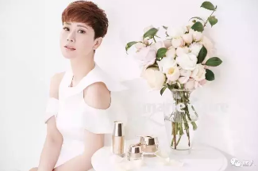
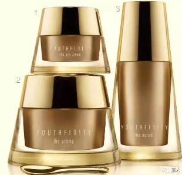
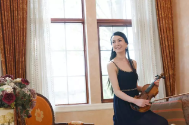

把人生修炼成你喜欢的模样，自信、从容、优雅

让人敬佩的事业女强人，看着强势干练；令人艳羡的家庭主妇，看似温柔如水。但每一个精致独立的女人都不止有一面：她们可能外在女汉子，内在小女人；或者外柔内刚；再或者外在传统，内在前卫……
无论是哪种“双面美人”，若能在经历岁月后保持优雅、精致独立，优雅从容便成了一种生活姿态，无关年龄。
事业女强人，忙事业忙发展，看似连吃饭的时间都没有了。
但她会在每天清晨，铺上别致的桌布，用心将喜欢的食物摆放到自己精心挑选的餐具中，精致的一天，就从仪式感满满的早餐开始。空气里充满着浓浓的咖啡香和面包香，每一次咀嚼、每一口啜饮都是深深的幸福感。

温婉贤淑的主妇，把家打理的井井有条，看似越来越失去了自我。
但爱自己的女人，从来不会忽视对自我的提升与寻找。在生活中，她扮演了很多角色，女儿、妻子、母亲、……但这都不是真正完全的自己，背起行囊，踏上旅行的路途，寻找更独立更精彩的自我。因为最美的自己在路上。

不论哪一面，她们都清楚地知道，人生的意义就在于成长、经历。只有不断的学习与感受，才会变得更美好。
而美是一种扎根的生活态度，无关岁月和年龄。不论几岁，对美的坚持从未减少丝毫，这是女人与生俱来且贯彻一生的使命。
事业与生活如日中天的海清，台上台下都神采奕奕，是让人羡慕的“无龄感”美妈，拥有白皙细腻的肌肤，使她演绎起职场精英女性亦或是时尚靓妈都得心应手。她坦言，做了演员之后，除了保证睡眠与健康心态外，肌肤的保养也很重要。具有保湿功能的面霜和提亮紧肤的眼霜，是她较看重的护肤品。拍戏期间，也会经常做一些面膜来护肤。（转载自《嘉人》）
传承玫琳凯半世纪护肤领域的创新与突破，科研中心历经九年终于发现“不谢玫瑰”的精粹奥秘，打造出高级肌肤保养系列——YOUTHFINITY®臻时粹颜®，给肌肤前所未有的奢宠享受。
 > > 强大科技，缔造美颜佳话 < < 凝聚独特Infinite-Rose Complex玫瑰复合物, 启动3R臻时焕肤系统。-
Reduce延缓：三肽激发vitality-preserving活力保存科技，肌肤焕发年轻美丽。
*根据关键成分的体外测试结果
- Rejuvenate焕活：月见草帮助肌肤更显紧实，充满活力。
-
Resist抵御：阿尔卑斯玫瑰帮助肌肤抵御外界侵害。
*根据关键成分的体外测试结果
高科技的配方，结合22K镀玫瑰金刮勺与按摩棒，为您“留住最美好的时光，焕发年轻纯粹的容颜”，打造奢华护肤体验，让女性如“永不凋谢”的玫瑰Never-Falling Rose般年轻常驻。
生命很短生活很长，在匆匆的时光岁月里，过自己喜欢的生活，喜欢自己过的生活，不遗余力、狠狠宠爱自己，才是女人最重要的事。